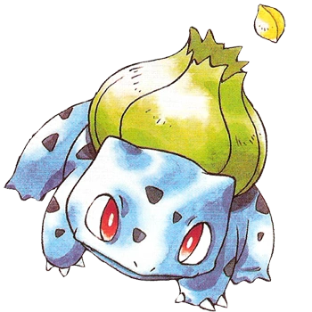
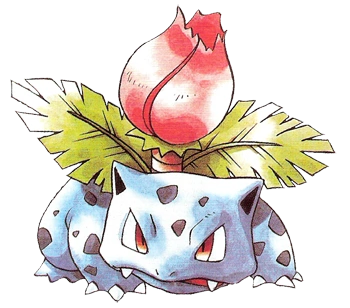
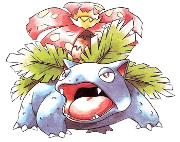
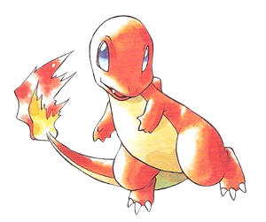
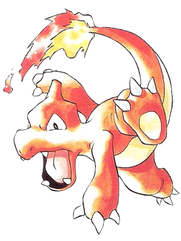
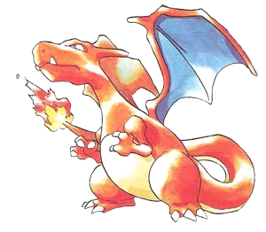
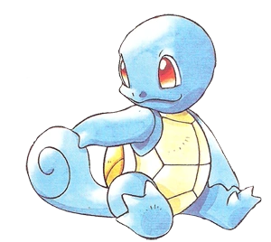
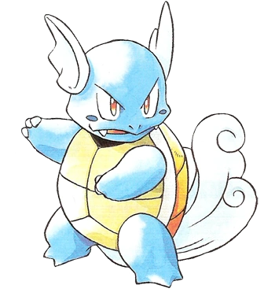
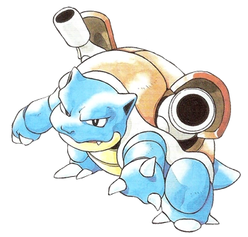

<!DOCTYPE html>
<html lang="en">
<head>
    <meta charset="UTF-8">
    <meta http-equiv="X-UA-Compatible" content="IE=edge">
    <meta name="viewport" content="width=device-width, initial-scale=1.0">
    <title>Document</title>
</head>
<body>
    
</body>
</html>
<!DOCTYPE html>
<html lang="en">
<head>
    <meta charset="UTF-8">
    <meta http-equiv="X-UA-Compatible" content="IE=edge">
    <meta name="viewport" content="width=device-width, initial-scale=1.0">
    <link rel="stylesheet" href="./css/style.css">
    <title>Pokedex</title>
    <link rel="preconnect" href="https://fonts.googleapis.com">
    <link rel="preconnect" href="https://fonts.gstatic.com" crossorigin>
    <link href="https://fonts.googleapis.com/css2?family=Share+Tech+Mono&display=swap" rel="stylesheet"> 
</head>
<body>
    <header>
        <h1 id="titulo">POKEDEX</h1>
    </header>
    <!--<div>
        <p>
            <a href="https://www.google.com">Bienvenidos a la Pokedex</a>
        </p>
    </div>-->
    <section class="container">
        <article class="post">
            <a target="_blank" href="https://pokemon.fandom.com/es/wiki/Bulbasaur">
            <h2>Bulbasaur</h2>
            <p>Su nombre proviene de las palabras en inglés bulb (bulbo) y saur, traducción al inglés de la palabra griega saûros (reptil o lagarto).</p>
            
            <p>Carga la semilla de una planta en su espalda desde el nacimiento, la semilla se desarrolla lentamente.Los investigadores no saben si calificarlo como una planta o animal. Es extremadamente feroz y muy difícil de capturar en el bosque.</p>
            </a>
        </article>
        <article class="post">
            <a target="_blank" href="https://pokemon.fandom.com/es/wiki/Ivysaur">
            <h2>Ivysaur</h2>
            <p>Su nombre proviene de las palabras en inglés ivy (hiedra) y saur, traducción al inglés de la palabra griega saûros (reptil o lagarto).</p>
            
            <p>El Pokémon semilla, forma evolucionada del Bulbasaur. El bulbo en su espalda absorbe nutrientes y se abre en una gran flor. </p>
            </a>
        </article>
        <article class="post">
            <a target="_blank" href="https://pokemon.fandom.com/es/wiki/Venusaur">
            <h2>Venusaur</h2>
            <p>Su nombre es una combinación de las palabras Venus (una flor parecida a la planta que le crece desde su etapa como Bulbasaur) y saur, que viene del griego saurus, que quiere decir reptil o lagarto y es el equivalente a la terminación -saurio en los nombres de muchos dinosaurios. Así, Venusaur podría traducirse como Venusaurio.</p>
            
            <p>Pokémon Semilla es de tipo planta y veneno se cree con una dieta nutritiva mucho sol. La flor de Venusaur tendrá colores más vibrantes, el aroma de la flor calma y sana el corazón humano. </p>
            </a>
        </article>

        <article class="post">
            <a target="_blank" href="https://pokemon.fandom.com/es/wiki/Charmander">
            <h2>Charmander</h2>
            <p>Su nombre es una contracción de las palabras en inglés charcoal (carbón) y salamander (salamandra).</p>
            
            <p>Una flama arde en la punta de su cola desde su nacimiento. Se dice que el Charmander muere si su flama llega a apagarse. </p>
            </a>
        </article>
        <article class="post">
            <a target="_blank" href="https://pokemon.fandom.com/es/wiki/Charmeleon">
            <h2>Charmeleon</h2>
            <p>Su nombre es una contracción de las palabras inglesas char (carbonizar, quemar) y chameleon (camaleón).</p>
            
            <p>El Pokémon flamífero. Tiene garras con filo de navaja y su cola es excepcionalmente fuerte.</p>
            </a>
        </article>
        <article class="post">
            <a target="_blank" href="https://pokemon.fandom.com/es/wiki/Charizard">
            <h2>Charizard</h2>
            <p>Su nombre es una contracción de las palabras en inglés char (carbonizar, quemar, incinerar) y lizard (lagarto). </p>
            
            <p>Charizard, el Pokémon flama. Charizard es un tipo volador y fuego. Cuando compite en batallas intensas, la flama de Charizard también se aviva. </p>
            </a>
        </article>

        <article class="post">
            <a target="_blank" href="https://pokemon.fandom.com/es/wiki/Squirtle">
            <h2>Squirtle</h2>
            <p>Su nombre proviene de las palabras en inglés squirt (disparar un chorro de agua) y turtle (tortuga).</p>
            
            <p>Esta pequeña tortuga Pokémon jala su largo cuello hacia su caparazón para lanzar increíbles ataques de agua con sorprendente alcance y exactitud. El golpe puede ser muy poderoso. </p>
            </a>
        </article>
        <article class="post">
            <a target="_blank" href="https://pokemon.fandom.com/es/wiki/Wartortle">
            <h2>Wartortle</h2>
            <p>Su nombre proviene de las palabras en inglés war (guerra) y turtle (tortuga). </p>
            
            <p>El Pokémon tortuga. La forma evolucionada de Squirtle. Su cola larga y peluda es símbolo de su edad y sabiduría.</p>
            </a>
        </article>
        <article class="post">
            <a target="_blank" href="https://pokemon.fandom.com/es/wiki/Blastoise">
            <h2>Blastoise</h2>
            <p>Su nombre es una combinación de las palabras en inglés blast (explosión o ráfaga) y tortoise (tortuga terrestre).</p>
            
            <p>El Pokémon marisco, la forma evolucionada de Wartortle. La fuerza de Blastoise está más en su poder que en su velocidad. Su caparazón es como una armadura y los ataques del hidrocañón en su espalda son prácticamente imparables. </p>
            </a>
        </article>
    </section>
    <footer>
        <section>
        <a href="#titulo">Ir al comienzo</a>
        </section>
        <p>Copyright 2022</p>
    </footer>
</body>
</html>